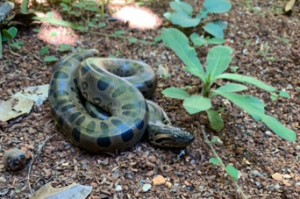

Seçao de Repteis

Nome: Jacaré-do-pantanal (Caiman yacare)
Classe: Reptilia
Ordem: Crocodylia
Família: Alligatoridae
- Mede entre dois a três metros de comprimento e seu padrão de coloração é bastante variado, sendo o dorso particularmente escuro, com faixas transversais amarelas, principalmente na região da cauda.
Nome: Jabuti-piranga (Chelonoidis carbonaria)
Classe: Reptilia
Ordem: Testudinata
Família: Testudinidae
- Os machos são maiores que as fêmeas, podendo ultrapassar 50 cm de casco.
- O plastrão é reto ou convexo nas fêmeas e côncavo nos machos, justamente para encaixarem nas fêmeas por ocasião da cópula.


Nome: Sucuri-verde (Eunectes murinus)
Classe: Reptilia
Ordem: Squamata
Família: Boidae
- As sucuris verdes são animais constritoras e como todas as cobras, elas têm uma língua bifurcada, que as ajuda a localizar presas e parceiros e a navegar em seu ambiente.
- A coloração desta serpente é verde oliva escuro dorsalmente, mudando gradualmente para amarelo no ventre.
- Possuem manchas dorsais redondas que são marrons com bordas pretas. As sucuris têm narinas dorsais e olhos pequenos posicionados no topo da cabeça, além de uma faixa pós-ocular preta proeminente que vai do olho até o ângulo da mandíbula.
- Esses animais podem atingir até 9 metros de comprimento.
Nome: Jiboia (Boa constrictor)
Classe: Reptilia
Ordem: Squamata
Família: Boidae
- Serpentes de porte médio, possuem cores que variam de creme a marrom ou cinza, com manchas geométricas escuras.
- Seus padrões de cores agem muitas vezes como uma camuflagem eficaz, tornando-as extremamente difíceis de serem visualizadas em ambiente natural.
- Os animais mais jovens tendem a ter cores mais brilhantes.
- Considera uma serpente pacífica e lenta.
- Podem chegar ao tamanho aproximado de 4 metros.